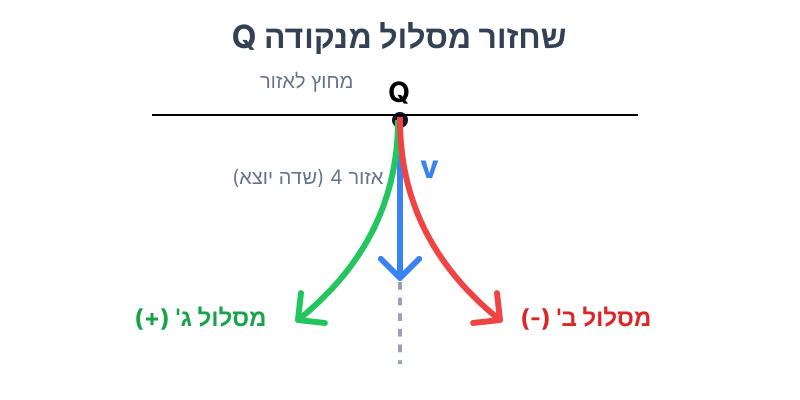

[תמונת השאלה המקורית]לא נמצאה תמונה בשם question-image.png באותה תיקייה.
סעיף א': קביעת סימן מטען החלקיק
מה נתון: באזור 4 קיים שדה מגנטי אחיד שכיוונו "יוצא מהדף" (\(\odot\)). נתון כיוון תנועת החלקיק באזור זה (על פי החצים בשרטוט, החלקיק נכנס לאזור 4 כשהוא נע ימינה, ומתעקם כלפי מעלה לכיוון נקודה \(Q\)).
מה מחפשים: לקבוע האם המטען החשמלי של החלקיק חיובי או שלילי, ולנמק.
נוסחאות ועקרונות בשימוש:
אנו משתמשים בנוסחת הכוח המגנטי הפועל על מטען בתנועה (כוח לורנץ) ובכלל יד ימין המקשר בין כיוון המהירות \(\vec{v}\), כיוון השדה \(\vec{B}\) וכיוון הכוח \(\vec{F}\) עבור מטען חיובי. אם כיוון הכוח בפועל הפוך לתוצאת הכלל, המטען שלילי.
\( F = qvB\sin\alpha \)
פתרון צעד-אחר-צעד:
נבחן את תנועת החלקיק בעת כניסתו לאזור 4. באותה נקודה וקטור המהירות \(\vec{v}\) מכוון ימינה. מסלול החלקיק מתעקם כלפי מעלה, ולכן כיוון הכוח המגנטי \(\vec{F}\) הפועל עליו מכוון כלפי מעלה (לכיוון מרכז המעגל). השדה המגנטי \(\vec{B}\) נתון כיוצא מהדף.
נפעיל את כלל יד ימין: נכוון את האגודל לכיוון המהירות (ימינה), ואת האצבעות לכיוון השדה (החוצה מהדף). כף היד, המצביעה על כיוון הכוח עבור מטען חיובי, תפנה כלפי מטה.
מכיוון שהכוח בפועל פועל כלפי מעלה (הפוך מכיוון כף היד), אנו מסיקים כי מטען החלקיק הוא הפוך, כלומר שלילי.
מסקנה: המטען של החלקיק הוא שלילי.
טיפ מורה:
כלל יד ימין תמיד מראה לנו מהו כיוון הכוח עבור מטען חיובי. כאשר אנו מגלים שהחלקיק סוטה בדיוק בכיוון ההפוך לזה שכף היד מראה, זו ההוכחה המוחלטת לכך שהחלקיק נושא מטען שלילי. זהו עקרון מפתח שכדאי תמיד לזכור!
סעיף ב': כיווני השדות המגנטיים
מה נתון: הוכחנו בסעיף הקודם כי המטען שלילי (\(q < 0\)). מסלול התנועה והתעקמותו בכל אחד מהאזורים נתונים בתרשים.
מה מחפשים: את כיוון השדה המגנטי \(\vec{B}\) באזורים 1, 2 ו-3 ("לתוך הדף" או "יוצא מהדף"), כולל נימוק.
נוסחאות ועקרונות בשימוש:
אנו מסתמכים שוב על כלל יד ימין. מכיוון שהמטען שלילי, כף היד תצביע בניגוד לכיוון ההתעקמות (כיוון הכוח) המופיע בתרשים. אנו נכוון את האגודל בכיוון המהירות \(\vec{v}\), נכוון את כף היד בכיוון ההפוך לכיוון הכוח \(\vec{F}\) הנתון בשרטוט, ונבדוק לאן מצביעות האצבעות (כיוון השדה).
פתרון צעד-אחר-צעד:
ננתח כל אזור בנפרד:
אזור 1: החלקיק נכנס כשהוא נע למעלה (\(\vec{v}\) למעלה) ומתעקם שמאלה (\(\vec{F}\) שמאלה). עבור מטען שלילי, כיוון \( \vec{v} \times \vec{B} \) צריך להיות ימינה (הפוך מהכוח). אם המהירות למעלה ומכפלתה בשדה נותנת ימינה, השדה חייב להיות יוצא מהדף (נבדוק: אגודל למעלה, אצבעות החוצה, כף יד ימינה, לכן כוח על מטען שלילי שמאלה - מתאים!).
אזור 2: החלקיק נכנס כשהוא נע שמאלה (\(\vec{v}\) שמאלה) ומתעקם למעלה (\(\vec{F}\) למעלה). עבור מטען שלילי, כיוון \( \vec{v} \times \vec{B} \) צריך להיות למטה. אם המהירות שמאלה ומכפלתה בשדה נותנת למטה, השדה חייב להיות לתוך הדף (נבדוק: אגודל שמאלה, אצבעות פנימה, כף יד למטה, לכן כוח על מטען שלילי למעלה - מתאים!).
אזור 3: החלקיק נכנס כשהוא נע למעלה (\(\vec{v}\) למעלה) ומתעקם ימינה (\(\vec{F}\) ימינה). עבור מטען שלילי, כיוון \( \vec{v} \times \vec{B} \) צריך להיות שמאלה. אם המהירות למעלה ומכפלתה בשדה נותנת שמאלה, השדה חייב להיות לתוך הדף (נבדוק: אגודל למעלה, אצבעות פנימה, כף יד שמאלה, לכן כוח על מטען שלילי ימינה - מתאים!).
מסקנה: אזור 1: (\(\odot\)) יוצא מהדף, אזור 2: (\(X\)) לתוך הדף, אזור 3: (\(X\)) לתוך הדף.
טיפ מורה:
בבחינה, מומלץ תמיד לעשות "בדיקה חוזרת" עם היד לאחר שהסקתם את כיוון השדה. כוונו את האצבעות בכיוון השדה שמצאתם ואת האגודל בכיוון המהירות, וראו אם כף היד (עבור מטען חיובי) פונה נגד כיוון ההתעקמות של המטען השלילי בשרטוט. אם כן, צדקתם!
סעיף ג': חישוב מטען החלקיק
מה נתון:
\(v = 3.6 \cdot 10^6 \text{ m/s}\)
\(m = 6.67 \cdot 10^{-27} \text{ kg}\)
\(B = 1 \text{ T}\)
\(a = 30 \text{ cm} = 0.3 \text{ m}\)
המרחק מ-C ל-P הוא \(15 \text{ cm}\). רוחב אזור 1 כולו הוא \(30 \text{ cm}\). נסיק שמרכז המעגל שעל פיו נע החלקיק נמצא על הגבול השמאלי, ורדיוס המסלול הוא \(R = 0.15 \text{ m}\).
מה מחפשים: את גודלו של המטען החשמלי של החלקיק, \(q\).
נוסחאות ועקרונות בשימוש:
החלקיק נע בתנועה מעגלית קצובה בהשפעת הכוח המגנטי המהווה כוח צנטריפטלי. נשתמש בחוק השני של ניוטון, יחד עם ביטוי הכוח המגנטי (כאשר \(\alpha = 90^\circ\)) ונוסחת התאוצה הרדיאלית.
\( \Sigma F = ma \)\( F = qvB\sin\alpha \)\( a_R = \frac{v^2}{R} \)
חישוב:
נציב למשוואת חוק שני של ניוטון בציר הרדיאלי:
\[ \Sigma F_R = m a_R \]
\[ |q| v B = m \frac{v^2}{R} \]
מסקנה: מטען החלקיק הוא \( q = -1.60 \cdot 10^{-19} \text{ C} \).
טיפ מורה:
שימו לב לדרישה המחמירה של הבגרות: אין להשתמש בנוסחה הסופית \(R = \frac{mv}{qB}\) כי היא אינה מופיעה בדף הנוסחאות. חובה תמיד לפתח אותה מהשוואת הכוח המגנטי למכפלת המסה בתאוצה הרדיאלית, בדיוק כפי שהראינו כאן. זהו שלב שמזכה בנקודות!
סעיף ד': שינוי וקטור המהירות
מה נתון: תנועתו של חלקיק טעון בשדה מגנטי אחיד המאונך למהירותו.
מה מחפשים: לדעת האם לאורך מסלול התנועה וקטור המהירות משתנה: (1) בכיוונו? (2) בגודלו? ולנמק.
נוסחאות ועקרונות בשימוש:
עקרון עבודה ואנרגיה ונוסחת העבודה. הכוח המגנטי תמיד מאונך לכיוון ההתקדמות המיידי של החלקיק (\(\theta = 90^\circ\)).
\( W = \Delta E_k \)\( W = Fs\cos\theta \)
ניתוח פיזיקלי:
שלב 1: שינוי בכיוון המהירות
כן, כיוון וקטור המהירות משתנה לכל אורך המסלול. הכוח המגנטי הפועל על החלקיק תמיד מאונך לכיוון תנועתו. כוח מאונך אינו משנה את גודל המהירות, אך הוא מקנה לחלקיק תאוצה רדיאלית המשנה את כיוון המהירות, ולכן החלקיק נע במסלולים עקומים (קשתות מעגליות).
שלב 2: שינוי בגודל המהירות
לא, גודל המהירות אינו משתנה. מאחר שהכוח המגנטי תמיד ניצב לוקטור המהירות (ולוקטור ההעתק המיידי \(\Delta x\)), הזווית ביניהם היא \(90^\circ\). על פי נוסחת העבודה, \(\cos 90^\circ = 0\), כלומר הכוח המגנטי אינו מבצע עבודה על החלקיק (\(W = 0\)). לפי משפט עבודה ואנרגיה, אם עבודת הכוח השקול אפס, האנרגיה הקינטית נשמרת (\(\Delta E_k = 0\)), וכך גם גודל המהירות נשאר קבוע לאורך כל התנועה.
מסקנה: כיוון המהירות משתנה. גודל המהירות אינו משתנה.
טיפ מורה:
הבחנה חשובה בפיזיקה היא בין "מהירות" (וקטור, הכולל גודל וכיוון) לבין "גודל מהירות" (סקלר). שדה מגנטי לא יכול לשנות גודל מהירות של חלקיק כיוון שהוא לא מבצע עבודה, אך הוא בהחלט משנה את הוקטור עצמו בכך שהוא מסובב אותו!
סעיף ה': זמן התנועה הכולל
מה נתון: גודל מהירות החלקיק קבוע לאורך כל המסלול: \(v = 3.6 \cdot 10^6 \text{ m/s}\). המסלול מורכב מארבע קשתות שוות. רדיוס כל קשת הוא \(R = 0.15 \text{ m}\). כל קשת היא בדיוק רבע מעגל (זווית של \(90^\circ\)), ולכן ארבע רבעי מעגל משלימים בדיוק למעגל שלם אחד.
מה מחפשים: את משך הזמן \(t\) שלוקח לחלקיק לנוע מנקודה P עד לנקודה Q.
נוסחאות ועקרונות בשימוש:
מכיוון שגודל המהירות קבוע, ניתן להשתמש בקשר הבסיסי מקינמטיקה לתנועה קצובה (או בהיקף מעגל). הדרך הכוללת היא היקף מעגל שלם.
\( v = \frac{\Delta x}{\Delta t} \)\( P = 2\pi R \)
חישוב:
נחשב את אורך המסלול הכולל (הדרך \(s\)):
\[ s = 4 \cdot \left( \frac{2\pi R}{4} \right) = 2\pi R \]
נכתוב את התוצאה בכתיב מדעי ונעגל ל-3 ספרות מהותיות:
\[ t = 2.62 \cdot 10^{-7} \text{ s} \]
מסקנה: זמן התנועה הכולל מ-P ל-Q הוא \( t = 2.62 \cdot 10^{-7} \text{ s} \).
טיפ מורה:
דרך נוספת ואלגנטית לפתור היא לחשב את זמן המחזור בתנועה מעגלית. מתוך \( \Sigma F = ma \) מגיעים ל- \( T = \frac{2\pi m}{|q|B} \). היות והחלקיק משלים שווה-ערך למעגל שלם (4 רבעים באותו שדה מגנטי עוצמתי), זמן התנועה הכולל הוא בדיוק זמן מחזור אחד \(T\). הצבת המסה והמטען תיתן את אותה תוצאה בדיוק!
סעיף ו': ירי חלקיקים בכיוון הפוך
מה נתון: מנקודה Q נורים פנימה אל תוך אזור 4 (כלומר לכיוון מטה, ציר y שלילי) שני חלקיקים: חלקיק ב' (מטען שלילי, זהה לחלקיק א') וחלקיק ג' (מטען חיובי). לשני החלקיקים מסה זהה, וגודל מהירות כניסה זהה לזה של חלקיק א'. אזור 4 מכיל שדה מגנטי "יוצא מהדף".
מה מחפשים: איזה משני החלקיקים ינוע במדויק על עקבות מסלולו המקורי של חלקיק א', ולנמק.
נוסחאות ועקרונות בשימוש:
כלל יד ימין למציאת כיוון הכוח. מכיוון שהמסה \(m\), גודל המהירות \(v\), וגודל המטען \(|q|\) זהים למקרה המקורי, רדיוס המסלול שייווצר יהיה זהה. נותר רק לבדוק לאיזה כיוון תתעקם תנועת החלקיק כדי לדעת אם הוא "ישחזר" את המסלול.
\( R = \frac{mv}{|q|B} \)
ניתוח כיווני:
חלקיק א' במקור יצא מנקודה Q כלפי מעלה, ומרכז הסיבוב שלו היה משמאלו (באזור שבין אזור 3 לאזור 4). כעת אנו יורים חלקיק מ-Q כלפי מטה. כדי שהוא ישחזר את המסלול של חלקיק א', הוא חייב להתעקם שמאלה (אל עבר אותו מרכז סיבוב ישן).
נבדוק את הכוחות באמצעות כלל יד ימין, כאשר וקטור המהירות \(\vec{v}\) מכוון כעת למטה, והשדה \(\vec{B}\) החוצה:
נכוון את האגודל כלפי מטה (כיוון המהירות).
נכוון את האצבעות החוצה אלינו (כיוון השדה).
כף היד תפנה שמאלה.
כלל יד ימין קובע שכף היד מראה את כיוון הכוח עבור מטען חיובי. מכיוון שאנו רוצים שהחלקיק אכן יתעקם שמאלה אל תוך המסלול המקורי, נדרש שהכוח עליו יפעל שמאלה. לכן, החלקיק שיבצע זאת הוא החלקיק בעל המטען החיובי - הלא הוא חלקיק ג'.
אם היינו משתמשים בחלקיק ב' (השלילי), הכוח עליו היה פועל ימינה, והוא היה מתעקם ויוצא מחוץ לאזור 4 המצויר.

מסקנה: החלקיק שינוע במדויק לאורך מסלול התנועה של חלקיק א' הוא חלקיק ג' (בעל המטען החיובי).
טיפ מורה:
זהו חוק סימטריה יפה בפיזיקה! אם רוצים להריץ מסלול של חלקיק "אחורה בזמן" (להפוך את וקטור המהירות ב-180 מעלות) ועדיין לשמור על אותה עקומה במרחב הפיזי בתוך שדה מגנטי קבוע - חובה עלינו גם להפוך את סימן המטען שלו.
נוסח השאלה המקורית
[תמונת השאלה המקורית]לא נמצאה תמונה בשם question-image.png.